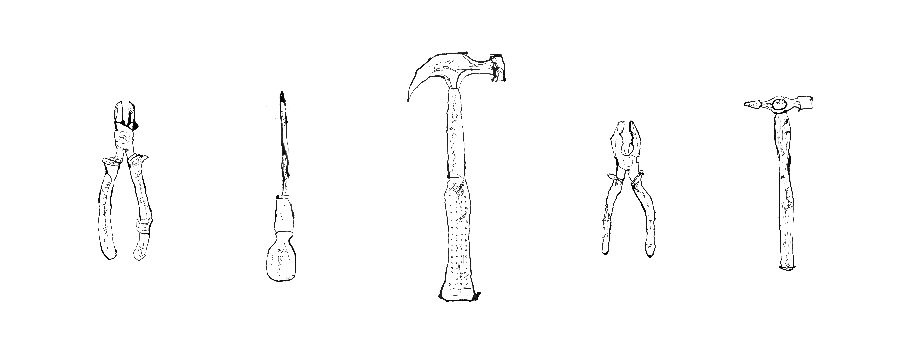

Borrowed
2026
Ink
Imprints brings together drawings and visual investigations concerned with the traces that people, experiences and the passage of time leave behind. The work often begins with an interest in ordinary objects, collected materials and personal associations. Through observation, drawing and experimentation, these subjects become a means of exploring ideas of memory, identity, ownership and human connection. Some works develop from objects that have been handled, inherited or passed between people; others explore more abstract relationships between form, material and personal experience. Each begins with something tangible, but gradually develops into a wider reflection on the meanings we attach to the things we encounter and carry with us.

2026
Ink